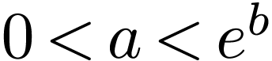

（）
（）
|
一、单选题
1．设集合，，则（）
| A． | B． | C． |
D． |
2．已知，则（）
A． |
B． |
C． |
D． |
3．已知圆锥的底面半径为，其侧面展开图为一个半圆，则该圆锥的母线长为（）
A． |
B． | C． |
D． |
4．下列区间中，函数单调递增的区间是（）
A． |
B． | C． | D． |
5．已知 ，
， 是椭圆
是椭圆 ：的两个焦点，点
：的两个焦点，点 在上，则（）
在上，则（）
| A．13 | B．12 | C．9 | D．6 |
6．若，则（）
| A． | B． | C． |
D． |
7．若过点可以作曲线的两条切线，则（）
| A． | B． | C． | D． |
8．有6个相同的球，分别标有数字1，2，3，4，5，6，从中有放回的随机取两次，每次取1个球，甲表示事件“第一次取出的球的数字是1”，乙表示事件“第二次取出的球的数字是2”，丙表示事件“两次取出的球的数字之和是8”，丁表示事件“两次取出的球的数字之和是7”，则（）
| A．甲与丙相互独立 | B．甲与丁相互独立 |
| C．乙与丙相互独立 | D．丙与丁相互独立 |
二、多选题
9．有一组样本数据 ，
， ，…，，由这组数据得到新样本数据，，…，，其中 为非零常数，则（）
，…，，由这组数据得到新样本数据，，…，，其中 为非零常数，则（）
A．两组样本数据的样本平均数相同
B．两组样本数据的样本中位数相同
C．两组样本数据的样本标准差相同
D．两组样数据的样本极差相同
10．已知 为坐标原点，点，，，，则（）
为坐标原点，点，，，，则（）
| A． | B． |
| C． | D． |
11．已知点 在圆上，点、，则（）
在圆上，点、，则（）
A．点到直线 的距离小于
的距离小于
B．点到直线的距离大于
C．当最小时，
D．当最大时，
12．在正三棱柱 中，，点满足，其中，，则（）
中，，点满足，其中，，则（）
A．当时，的周长为定值
B．当时，三棱锥的体积为定值
C．当时，有且仅有一个点，使得
D．当时，有且仅有一个点，使得平面
三、填空题
13．已知函数是偶函数，则 ．
．
14．已知为坐标原点，抛物线： ()的焦点为 ，为上一点，与
，为上一点，与 轴垂直，
轴垂直， 为轴上一点，且，若，则的准线方程为．
为轴上一点，且，若，则的准线方程为．
15．函数的最小值为．
四、双空题
16．某校学生在研究民间剪纸艺术时，发现剪纸时经常会沿纸的某条对称轴把纸对折，规格为dm的长方形纸，对折1次共可以得到dm，dm两种规格的图形，它们的面积之和，对折2次共可以得到 dm，dm，dm三种规格的图形，它们的面积之和，以此类推，则对折4次共可以得到不同规格图形的种数为；如果对折
dm，dm，dm三种规格的图形，它们的面积之和，以此类推，则对折4次共可以得到不同规格图形的种数为；如果对折 次，那么dm.
次，那么dm.
五、解答题
 满足，
满足， {
{
| an+1,n为奇数, |
| an+2,n为偶数. |
（1）记，写出，，并求数列的通项公式；
（2）求的前20项和.
18．某学校组织“一带一路”知识竞赛，有A，B两类问题，每位参加比赛的同学先在两类问题中选择一类并从中随机抽取一个问题回答，若回答错误则该同学比赛结束；若回答正确则从另一类问题中再随机抽取一个问题回答，无论回答正确与否，该同学比赛结束.A类问题中的每个问题回答正确得20分，否则得0分；B类问题中的每个问题回答正确得80分，否则得0分，己知小明能正确回答A类问题的概率为0.8，能正确回答B类问题的概率为0.6，且能正确回答问题的概率与回答次序无关.
（1）若小明先回答A类问题，记 为小明的累计得分，求的分布列；
为小明的累计得分，求的分布列；
（2）为使累计得分的期望最大，小明应选择先回答哪类问题？并说明理由.
19．记是内角的对边分别为 ，
， ，
， .已知，点
.已知，点 在边
在边 上， .
上， .
（1）证明：；
（2）若，求.
20．如图，在三棱锥中，平面平面，，为 的中点.
的中点.
（1）证明：；
（2）若是边长为1的等边三角形，点 在棱上，，且二面角的大小为
在棱上，，且二面角的大小为 ，求三棱锥的体积.
，求三棱锥的体积.
21．在平面直角坐标系 中，已知点、，点的轨迹为.
中，已知点、，点的轨迹为.
（1）求的方程；
（2）设点 在直线
在直线 上，过的两条直线分别交于
上，过的两条直线分别交于 、
、 两点和，两点，且，求直线的斜率与直线的斜率之和.
两点和，两点，且，求直线的斜率与直线的斜率之和.
22．已知函数.
（1）讨论 的单调性；
的单调性；
（2）设，为两个不相等的正数，且，证明：e.